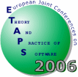
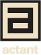

|

|
Sixth Workshop on Language Descriptions, Tools and
Applications
LDTA 2006
|
![[Elsevier]](Images/elsevier.gif)
|
|
|
In Cooperation with ACM SIGPLAN
|
![[ACM]](Images/acmlogo.gif)
|

We thank actant for
their financial
support of LDTA.
|
Saturday, April 1, 2006 in Vienna, Austria
Call for Papers:
.txt,
.pdf,
|
|
Scope
The aim of this one-day workshop is to bring together researchers from
academia and industry interested in the field of formal language
definitions and language technologies, with a special emphasis on
tools developed for or with these language definitions. This active
area of research involves the following basic technologies:
- Program analysis, transformation, and generation
- Formal analysis of language properties
- Automatic generation of language processing tools
For example, language definitions can be augmented in a manner so that
not only compilers or interpreters can be automatically generated but
also other tools such as syntax-directed editors, debuggers, partial
evaluators, test generators, documentation generators, etc. Although
various specification formalisms like attribute grammars, action
semantics, operational semantics, and algebraic approaches have been
developed, they are not widely exploited in current practice.
It is the aim of the LDTA workshops to bridge this gap between theory
and practice. Among others, the following application domains can
benefit from advanced language technologies:
- Software component models and modeling languages
- Re-engineering and re-factoring
- Aspect-oriented programming
- Domain-specific languages
- XML processing
- Visualization and graph transformation
- Programming environments such as Eclipse, .net, Rotor, SUN Java,
etc.
The workshop welcomes contributions on all aspects of formal language
definitions, with special emphasis on applications and tools developed
for or with these language definitions.
Invited Speaker:
The invited speaker for LDTA 2006 is
Jean Bézivin,
Université de Nantes.
Workshop Programme
The programme will be published here in the spring of 2006 once it
has been determined.
Registration
Registration for this workshop is handled via the
ETAPS registration procedure which will be available from the
main ETAPS web page.
We encourage all LDTA participants to also register for the ETAPS
workshop dinner to be held the night of the workshop.
Submission Procedure and Publication
Submission will be open from autumn 2005. Two classes of papers are
solicited: full-length research papers and short tool-demo
papers.
Tool-demo papers should contain a brief description of the tool and
include a section that clearly explains what will be
demonstrated.
Full-length papers should be at most 15 pages in length
and tool-demo papers should be at most 4 pages in length. Both
classes of papers should be submitted electronically as PostScript or
PDF files to both of the program committee chairs, John Tang Boyland and Tony Sloane. The message
should also contain a text-only abstract and contact author
information.
Please use the ENTCS style (generic LaTeX
package and
the special LDTA 2006 macros available
here) for
preparing your submission of a full-length or tool-demo paper.
Author's instructions and examples can be found in the ENTCS generic
LaTeX package.
The final versions of accepted papers will be published in
Electronic Notes in Theoretical Computer Science (ENTCS), Elsevier
Science, and will be made available during the workshop.
The authors of the best full-length papers will be invited to
write a journal version of their paper which will be separately
reviewed and, assuming acceptance, be published in
journal form.
As in past years, this will be done in a a special issue devoted to LDTA 2006
of the journal Science
of Computer Programming (Elsevier Science).
Important Dates
|
Submission deadline:
|
December 1, 2005.
|
|
Notification:
|
January 16, 2006
|
|
Final version due:
|
February 15, 2006
|
|
Workshop:
|
April 1, 2006
|
Program Committee
-
Uwe Aßmann, Dresden Technical University
-
John Tang Boyland,
University of Wisconsin-Milwaukee, USA (co-chair)
-
Jim Cordy,
Queen's University, Canada
-
Jan Heering,
Centrum voor Wiskunde en Informatica (CWI), The Netherlands
-
Nigel Horspool,
University of Victoria, Canada
-
Johan Jeuring,
Utrecht University, The Netherlands
-
Adrian Johnstone,
Royal Holloway, University of London, UK
-
Steven Klusener,
Vrije Universiteit, The Netherlands
-
David Lacey,
University of Warwick, United Kingdom
-
Brian Malloy,
Clemson University, USA
-
Paul Roe,
Queensland University of Technology, Australia
-
Michael Schwartzbach,
BRICS, University of Aarhus, Denmark
-
Tony Sloane,
Macquarie University, Australia (co-chair)
-
Yannis Smaragdakis,
Georgia Institute of Technology, USA
-
David Watt,
University of Glasgow, Scotland
-
David Wile,
Teknowledge Corp, USA
Organizing Committee
History
LDTA 2006 is the sixth instance of a series of succesful ETAPS
satellite events:
-
2001
(Genova, Italy)
-
2002
(Grenoble, France)
-
2003
(Warsaw, Poland)
-
2004
(Barcelona, Spain)
-
2005
(Edinburgh, Scotland)
The workshop emerged from the Workshops on Attribute Grammars and
their Applications (WAGA'90, Paris; SAGA'91, Prague, WAGA'99,
Amsterdam, and WAGA'00, Ponte de
Lima) and from the ASF+SDF Workshops (ASF+SDF'95 and
ASF+SDF'97, both in Amsterdam).